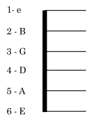

Guitar Fretboard Crash Course
Standard Tuning
Why do we tune the guitar in this "standard" way that we do? TL;DR it's easier to play that way and it's been around since the 1500s If you need to brush up on your standard tuning knowledge, here's a refresher:
The highest sounding string is the 1st string (e), the lowest sounding string is the 6th string (E). (You wouldn't believe how many students get this wrong, even after years of playing).
The Horizontal
Next, we're going to use the major scale to move horizontally up the fretboard.
Why the major scale? Because it's the basis for everything in western music nowadays, which had its own evolution from the modes used in the Renaissance (but that's a whole other story).
First, a little refresher of the "formula" of the major scale: Whole step - Whole step - Half step - Whole step - Whole step - Whole step - Half step C - D - E - F - G - A - B - C Do - Re - Mi - Fa - Sol - La - Si - Do
Here's what that looks like on the 2nd string:

Next, we'll play the major scale horizontally across all six strings. You can flip through the strings below:

The Vertical
If we only take every C note from those scales and connect them, we get these octave patterns:

Have a scroll through the different octave shapes below:

Your root is the most important note; it's your anchor. It's the relation between the root and all the other notes that will determine the resulting sonority; everything is in relation to the root. The better you find and can see your root notes, the more freedom, command and insight you'll have over the fretboard